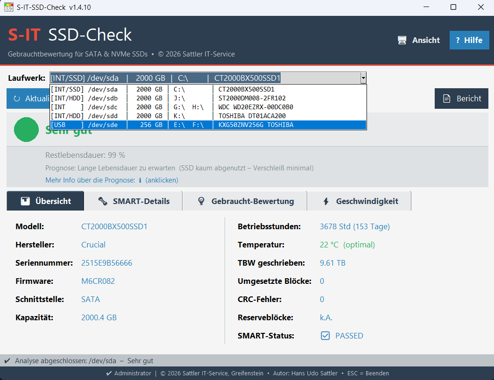
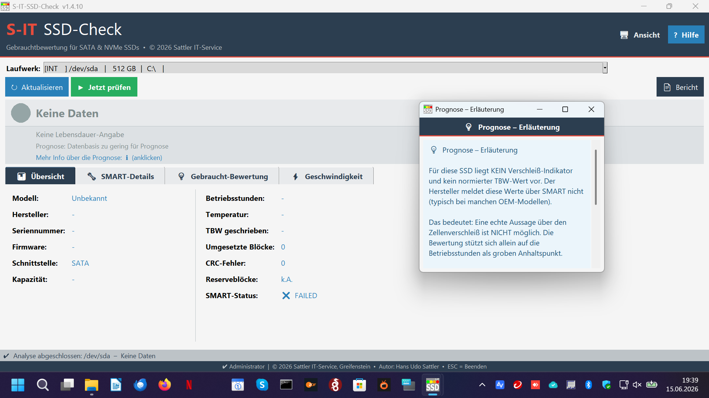

So nutzen Sie S-IT SSD-Check richtig
S-IT SSD-Check liest die im Laufwerk selbst gespeicherten SMART-Gesundheitswerte aus und bewertet sie verständlich per Ampel. Wie zuverlässig das funktioniert, hängt davon ab, wie die SSD angeschlossen ist und welche Werte sie überhaupt meldet. Diese Seite erklärt ehrlich, was das Tool kann, wo seine Grenzen liegen – und wie Sie die besten Ergebnisse erzielen.
Der typische Anwendungsfall: Eine gebrauchte oder ausgebaute SSD soll schnell und verständlich auf ihren Gesundheitszustand geprüft werden – etwa beim Ankauf von Gebraucht-Hardware, vor dem Wiedereinbau oder zur Dokumentation gegenüber Kunden.
Das Tool richtet sich bewusst an die Prüfung per USB-SATA-Adapter oder Dockingstation – also genau den Weg, den auch Werkstätten und Gebraucht-Händler in der Praxis nutzen. Die SSD wird angeschlossen, das Tool zeigt in Sekunden Ampel, SMART-Details und einen druckbaren Bericht.
Damit das Tool die Gesundheitswerte lesen kann, muss der USB-SATA-Adapter die SMART-Befehle durchreichen („SMART-Passthrough"). Nicht jeder Adapter kann das – und hier zeigen sich in der Praxis deutliche Unterschiede zwischen den verbauten Bridge-Chips.
Erfahrungen aus unseren eigenen Werkstatt-Tests
| Chip / Typ | Bewertung | Beobachtung |
|---|---|---|
| Realtek RTL9210 / RTL9210B | empfehlenswert | Lief in unseren Tests zuverlässig, reicht die Werte sauber durch. |
| ASMedia (neuere Serien) | empfehlenswert | Gute Erfahrung; SMART-Werte werden in der Regel korrekt übergeben. |
| Ältere ASMedia-SATA-Bridges (z. B. ASM1051/1153) |
wechselhaft | Je nach Firmware: läuft mal stabil, blockierte bei uns aber gelegentlich die Laufwerks-Erkennung von Windows – am selben Adapter mal am Laptop ok, am Desktop nicht. |
| Günstige No-Name-Gehäuse (diverse Chips) |
wechselhaft | Funktionieren oft, reichen aber einzelne Werte nicht durch – z. B. fehlt die Temperatur oder der TBW-Wert. Manche bleiben sporadisch hängen. |
| Sehr billige Adapter an USB-Hub | heikel | Am USB-Hub instabil (mal erkannt, mal nicht); direkt am PC- oder Laptop-Port dagegen oft stabil und mit vollständigen Daten. |

Nicht jede SSD liefert dieselben Kennzahlen. Das Tool wertet aus, was vorhanden ist, und sagt ehrlich, wenn etwas fehlt:
Idealfall: Verschleiß-Indikator vorhanden
Viele SSDs (z. B. Crucial, Samsung, Toshiba/Kioxia NVMe) melden einen prozentualen Verschleiß-Wert und/oder die geschriebene Datenmenge (TBW). Daraus berechnet das Tool eine belastbare Restlebensdauer und Prognose – das ist die zuverlässigste Bewertung.
Eingeschränkt: kein Verschleiß-Indikator
Manche – vor allem ältere OEM-SSDs aus Fertig-PCs und Business-Laptops (z. B. diverse SanDisk-OEM-Modelle) – melden keinen Verschleiß-Wert und kein normiertes TBW. Dann kann das Tool keine echte Verschleiß-Aussage treffen und stützt sich ehrlich nur auf die Betriebsstunden als groben Anhaltspunkt.
Teilweise: einzelne Werte fehlen adapterbedingt
Kommt z. B. die Temperatur oder der TBW-Wert nicht an, obwohl die SSD sie eigentlich meldet, liegt das oft am Adapter, der diese Werte nicht durchreicht. Das Tool zeigt dann „k. A." mit einem entsprechenden Hinweis.
Bei vielen Marken-Laptops (u. a. Dell, Lenovo, HP, Acer) ist die interne SSD im BIOS auf den RAID-/Intel-RST-Modus gestellt. In diesem Modus blockiert der Speicher-Controller den standardisierten Weg, über den Diagnose-Tools die SMART-Werte abfragen – die Daten sind zwar vorhanden, aber nicht auf dem üblichen Weg erreichbar.
S-IT SSD-Check erkennt das und weist in diesem Fall klar „SMART nicht verfügbar" aus, anstatt eine Bewertung ohne belastbare Datengrundlage anzuzeigen. Ein Geschwindigkeitstest ist trotzdem möglich, da er unabhängig von SMART funktioniert.

Damit Sie die Ergebnisse richtig einordnen können – ein paar bewusste Grenzen des Tools:
- Die Bewertung beruht auf den vom Laufwerk gemeldeten SMART-Werten. Sind keine Verschleiß-Daten vorhanden, ist nur eine grobe Einordnung nach Betriebsstunden möglich.
- Betriebsstunden allein sagen wenig über den tatsächlichen Zellenverschleiß – eine Platte mit vielen Stunden, aber wenig Schreiblast kann gesünder sein als umgekehrt. Die Laufzeit-Bewertung ist daher bewusst vorsichtig.
- Prognose-Angaben sind theoretische Schätzwerte auf Basis der aktuellen Werte und keine Garantie. Ein plötzlicher Elektronik-Defekt ist bei keiner SSD vorhersehbar.
- Der Geschwindigkeitstest misst sequenzielle Lese-/Schreibraten als Plausibilitätsprüfung – er ersetzt keinen vollständigen Benchmark.
- Das Tool ist auf SSDs ausgelegt. Herkömmliche Festplatten (HDDs) werden zwar angezeigt, aber nicht nach ihren spezifischen Gesundheitskriterien bewertet.
- Am zuverlässigsten per SMART-fähigem USB-Adapter oder Dock prüfen (Realtek RTL9210, neuere ASMedia haben sich bewährt).
- Bei RAID-/RST-Laptops die SSD ausbauen und per Adapter prüfen.
- Fehlen Verschleiß-Daten, bewertet das Tool ehrlich nur grob nach Laufzeit.
- Wird ein Adapter träge: anderen Port/Adapter probieren oder PC neu starten.